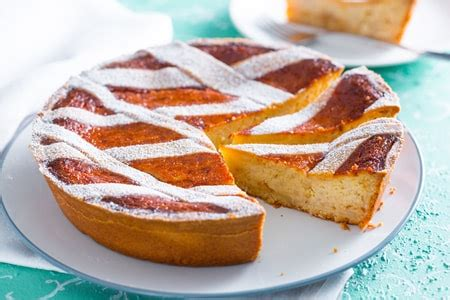
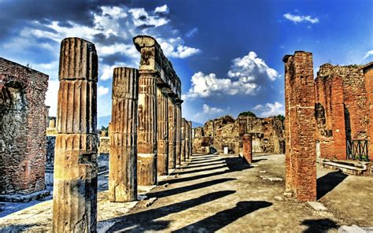
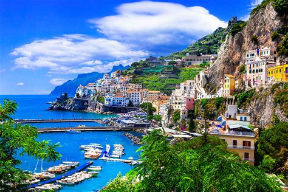
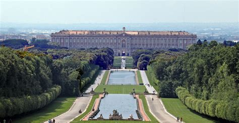

Campania
Overview
Campania is a region rich in history, culture, and natural beauty, located in southwestern Italy. Known for its stunning coastline, the Vesuvius volcano, and archaeological sites like Pompeii, Campania offers a unique combination of sea, mountains, and art.
Quick Facts
- Capital: Naples
- Language: Italian
- Population: About 5.8 million
- Famous for: Pizza, archaeology, breathtaking coasts
- Fun Fact: This is the birthplace of the world-famous Neapolitan pizza!
Popular Dishes
Neapolitan Pizza

Buffalo Mozzarella

Spaghetti with Clams

Pastiera Napoletana

Famous Landmarks
Pompeii

Vesuvius

Amalfi Coast

Naples

Royal Palace of Caserta

When to Visit
Spring and autumn are perfect to enjoy mild weather and visit historical sites without the summer crowds. Summer is ideal for beaches and coastal activities, while winter offers a quieter atmosphere.
Regional Symbols
- Flag:
- Coat of arms: